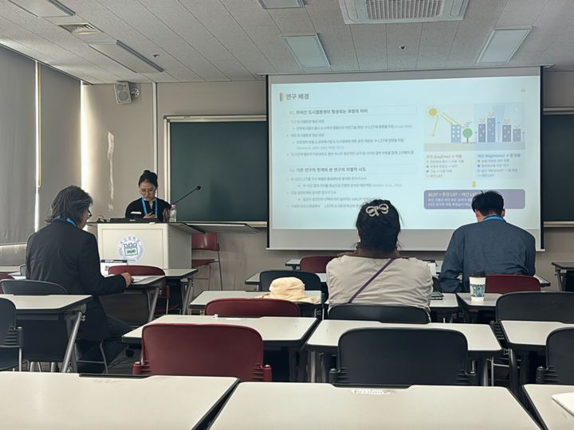
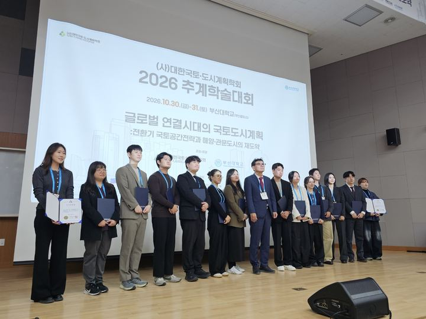
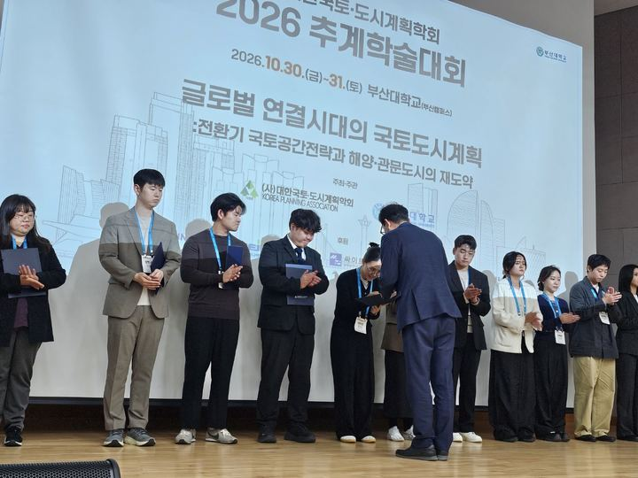
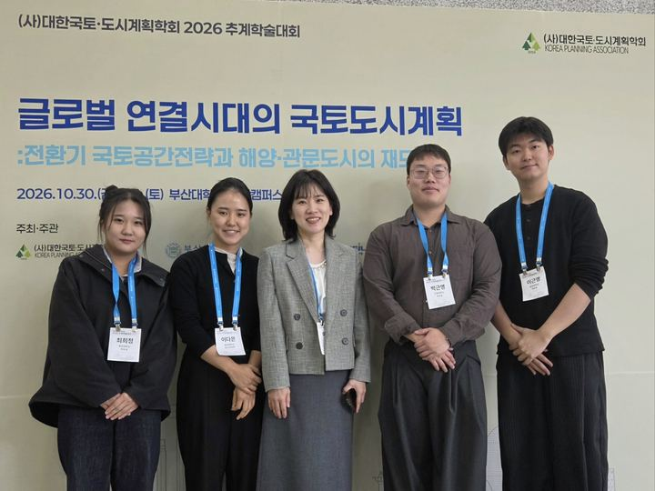
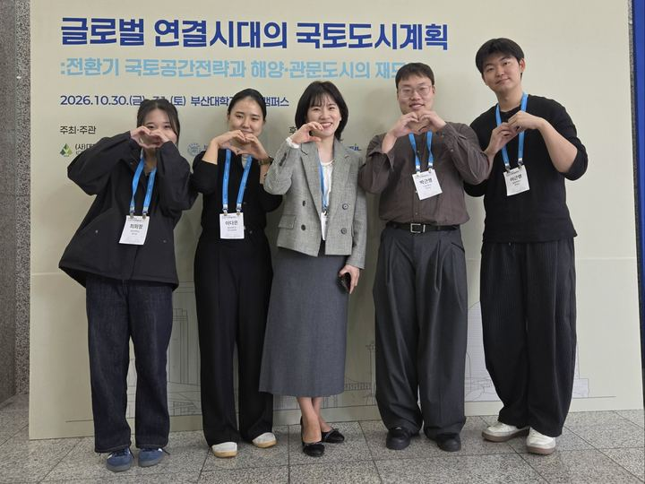

2026.10.31
도시 물리적 특성과 주야간 지표면온도 차이의 다중 스케일 관계: 서울시 ECOSTRESS를 활용한 공간회귀분석
Korea Planning Association Fall Industry–Academia Conference, Pusan National University대한국토·도시계획학회 추계산학학술대회, 부산대학교









